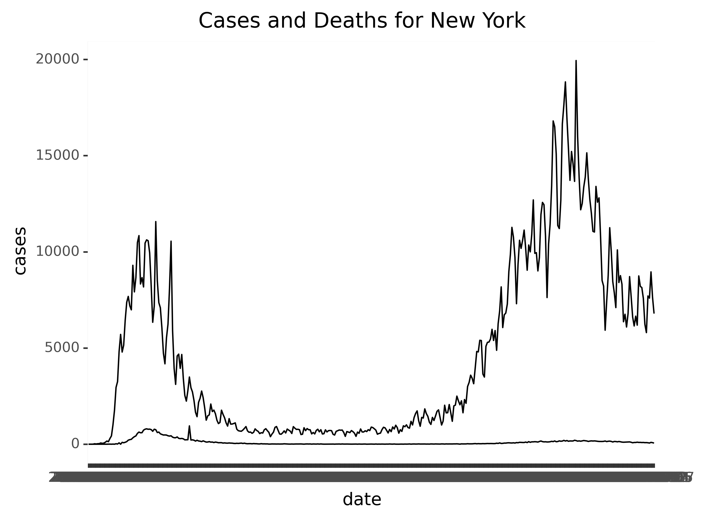
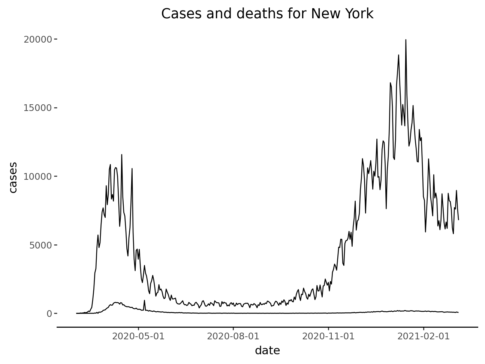
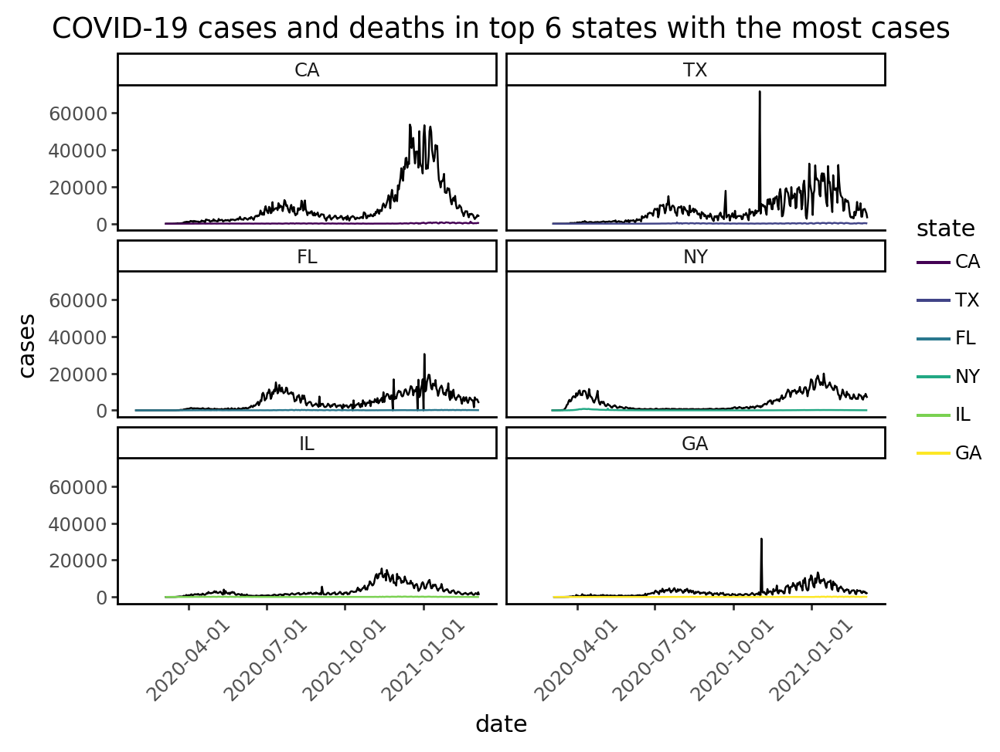

# Import your packages here
import pandas as pd
from matplotlib import rcParams
from mizani.breaks import date_breaks
from plotnine import (
ggplot,
aes,
geom_line,
theme_classic,
labs,
theme,
facet_wrap,
element_text,
element_blank,
scale_x_datetime
)
# Set some pandas options
pd.set_option('display.max_columns', None)
pd.set_option('mode.copy_on_write', True)
rcParams.update({'savefig.bbox': 'tight'}) # Keeps plotnine legend from being cut offVisualize and filter data
Read and visualize
In this milestone, you’ll use plotnine to visualize how the number of COVID-19 cases and deaths evolved for a subset of the data. But before you begin, you’ll need to import the covid data set like you did in the previous milestone.
Recreation
Part 1 - Import
In the code chunk below, use a function from the pandas package to read in the covid data set.
- The data set lives in the file
covid.csv, which is stored in thedata/folder in your working directory. - Assign the data set to a variable named
covid
covid = pd.read_csv("data/covid.csv")Part 2 - Subset
Run the code below to see a table.
solution = pd.read_csv('data/milestone02.csv')
solution| date | state | tests | cases | hospitalizations | deaths | |
|---|---|---|---|---|---|---|
| 0 | 2020-03-02 | NY | 0 | 0 | 0 | 0 |
| 1 | 2020-03-03 | NY | 1 | 1 | 0 | 0 |
| 2 | 2020-03-04 | NY | 9 | 0 | 0 | 0 |
| 3 | 2020-03-05 | NY | 20 | 2 | 0 | 0 |
| 4 | 2020-03-06 | NY | 92 | 22 | 0 | 0 |
| ... | ... | ... | ... | ... | ... | ... |
| 366 | 2021-03-03 | NY | 218069 | 7704 | 0 | 75 |
| 367 | 2021-03-04 | NY | 270089 | 7593 | 0 | 61 |
| 368 | 2021-03-05 | NY | 296935 | 8956 | 0 | 95 |
| 369 | 2021-03-06 | NY | 273132 | 7647 | 0 | 79 |
| 370 | 2021-03-07 | NY | 227768 | 6789 | 0 | 59 |
371 rows × 6 columns
Your task is to filter covid for the rows where state is “NY” and save the result as a new data set called subset.
Note: the index numbers for your table and the example will be different; that is expected. We’ll learn about resetting indexes in a future week.
subset = covid.loc[covid['state'] == 'NY']
subset| date | state | tests | cases | hospitalizations | deaths | |
|---|---|---|---|---|---|---|
| 210 | 2020-03-02 | NY | 0 | 0 | 0 | 0 |
| 222 | 2020-03-03 | NY | 1 | 1 | 0 | 0 |
| 245 | 2020-03-04 | NY | 9 | 0 | 0 | 0 |
| 274 | 2020-03-05 | NY | 20 | 2 | 0 | 0 |
| 313 | 2020-03-06 | NY | 92 | 22 | 0 | 0 |
| ... | ... | ... | ... | ... | ... | ... |
| 20531 | 2021-03-03 | NY | 218069 | 7704 | 0 | 75 |
| 20587 | 2021-03-04 | NY | 270089 | 7593 | 0 | 61 |
| 20643 | 2021-03-05 | NY | 296935 | 8956 | 0 | 95 |
| 20699 | 2021-03-06 | NY | 273132 | 7647 | 0 | 79 |
| 20755 | 2021-03-07 | NY | 227768 | 6789 | 0 | 59 |
371 rows × 6 columns
Part 3 - Visualize
Your task is to recreate this plot, which displays COVID-19 cases and deaths over time for the state of New York.

To see a larger version of the image, navigate to the images/ directory in the Files pane, then click on milestone02.png.
Use plotnine functions and the subset data set in the following chunk to re-create the plot above.
Hint: This plot uses two geoms to create the two lines, one representing number of cases and the other representing number of deaths
Hint: If you get a warning saying, “Each group consists of only one observation. Do you need to adjust the group aesthetic?”, then add group=1 to each of your geoms.
# Remember to import the plotnine functions that you'll be using.
# You can add them to the `setup` chunk at the top to keep your code organized.
subset.info()
# Convert to a datetime object
subset['date'] = pd.to_datetime(subset['date'])
(
ggplot(data = subset, mapping = aes(x = 'date')) +
geom_line(aes(y = 'cases')) +
geom_line(aes(y = 'deaths')) +
labs(title = 'Cases and deaths for New York') +
theme_classic() +
theme(axis_line_y = element_blank())
)<class 'pandas.core.frame.DataFrame'>
Index: 371 entries, 210 to 20755
Data columns (total 6 columns):
# Column Non-Null Count Dtype
--- ------ -------------- -----
0 date 371 non-null object
1 state 371 non-null object
2 tests 371 non-null int64
3 cases 371 non-null int64
4 hospitalizations 371 non-null int64
5 deaths 371 non-null int64
dtypes: int64(4), object(2)
memory usage: 20.3+ KB
Using the code chunk below, investigate a research question about this data, using the visualization skills you learned this week. Some ideas:
- Your recreation focused on the evolution of COVID-19 cases and deaths in the state of New York. How does the trajectory of New York compare to another state with similar case counts?
- Do you see similar patterns across states? Does this answer change if you look at only high (or low) case counts?
- Within a state or states of interest, what patterns do you see between number of cases and number of deaths over time?
- [any other research question of interest]
Alternately, working with a data set of your own, complete the following:
- Read in your data
- Filter your data using a logical test/condition
- Graph this data subset using at least one geom
covid = pd.read_csv('data/covid.csv')
type(covid)
covid['date'] = pd.to_datetime(covid['date'])
covid['state'] = covid['state'].astype('category')
# which six states had more cases?
sum_cases_ordered = covid. \
groupby('state'). \
sum('cases'). \
sort_values('cases', ascending=False)
# get the six state list
top_six = sum_cases_ordered.head(6).index.values.tolist()
# filter table
subset_states = covid.loc[covid.state.isin(top_six)]
# order state column by sum case
subset_states['state'] = pd.Categorical(subset_states['state'], categories=top_six, ordered=True)
(
ggplot(data = subset_states, mapping = aes(x = 'date')) +
geom_line(aes(y = 'cases')) +
geom_line(aes(y = 'deaths', color = 'state')) +
facet_wrap('state', scales = 'fixed', ncol = 2) +
labs(title = 'COVID-19 cases and deaths in top 6 states with the most cases') +
theme_classic() +
scale_x_datetime(breaks = date_breaks('3 month')) +
theme(
axis_text_x = element_text(rotation = 45)
)
)/tmp/ipykernel_71454/2948319687.py:9: FutureWarning: The default of observed=False is deprecated and will be changed to True in a future version of pandas. Pass observed=False to retain current behavior or observed=True to adopt the future default and silence this warning.